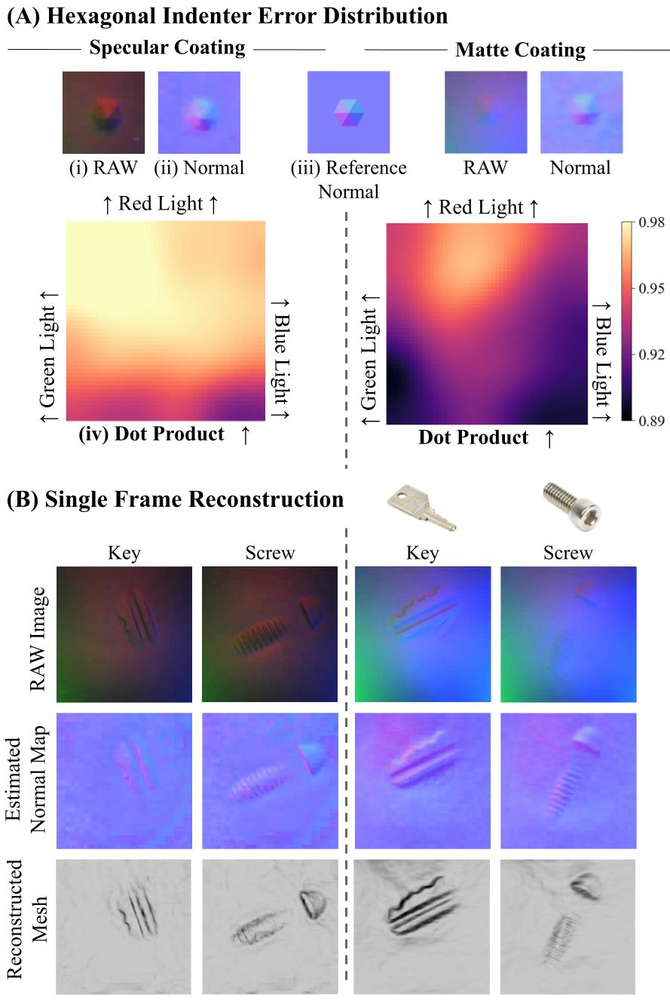

Local reconstruction.
A hexagonal indenter is tested at 50 locations across the sensing surface. Specular coating produces more consistent surface-normal estimates.
0.965Specular
0.939Matte
Mean normal dot product · closer to 1 is better
